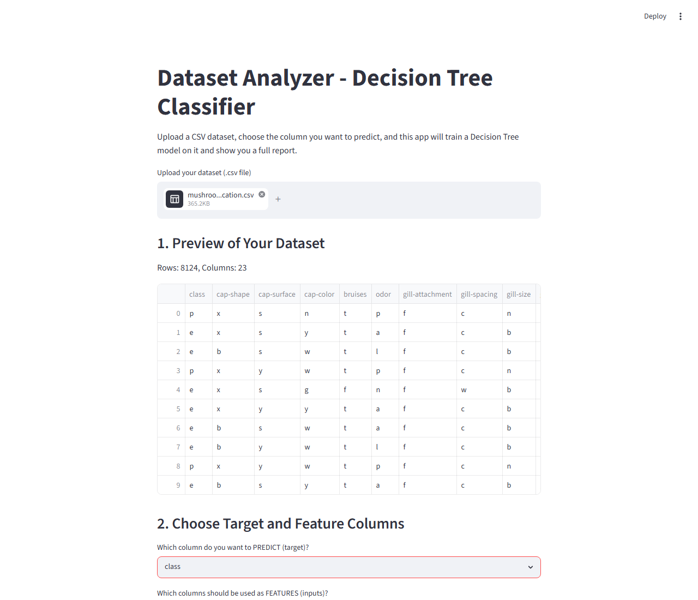
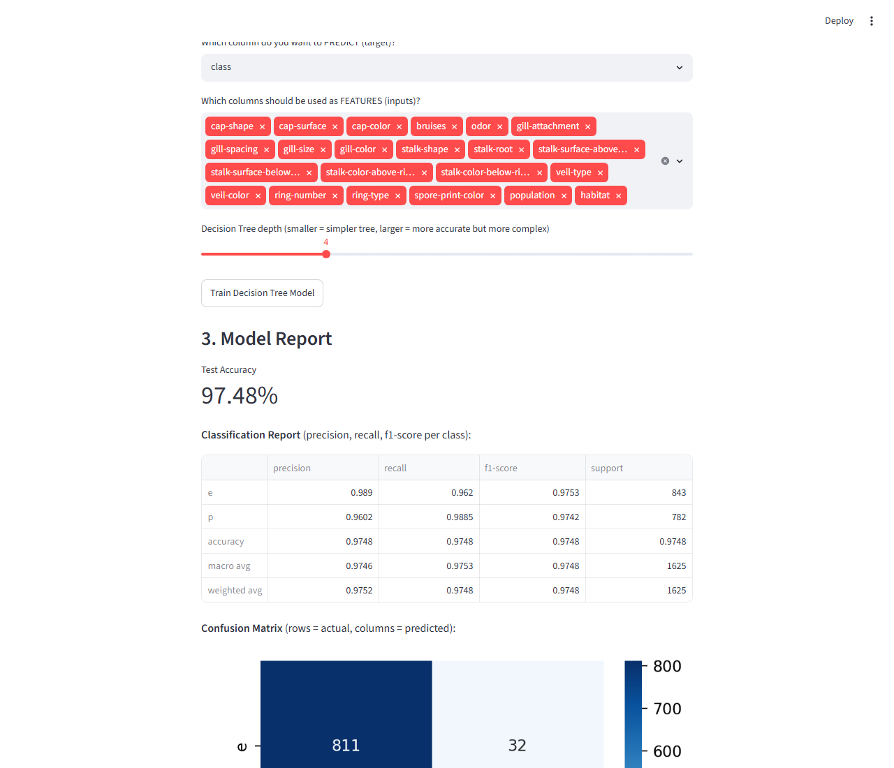
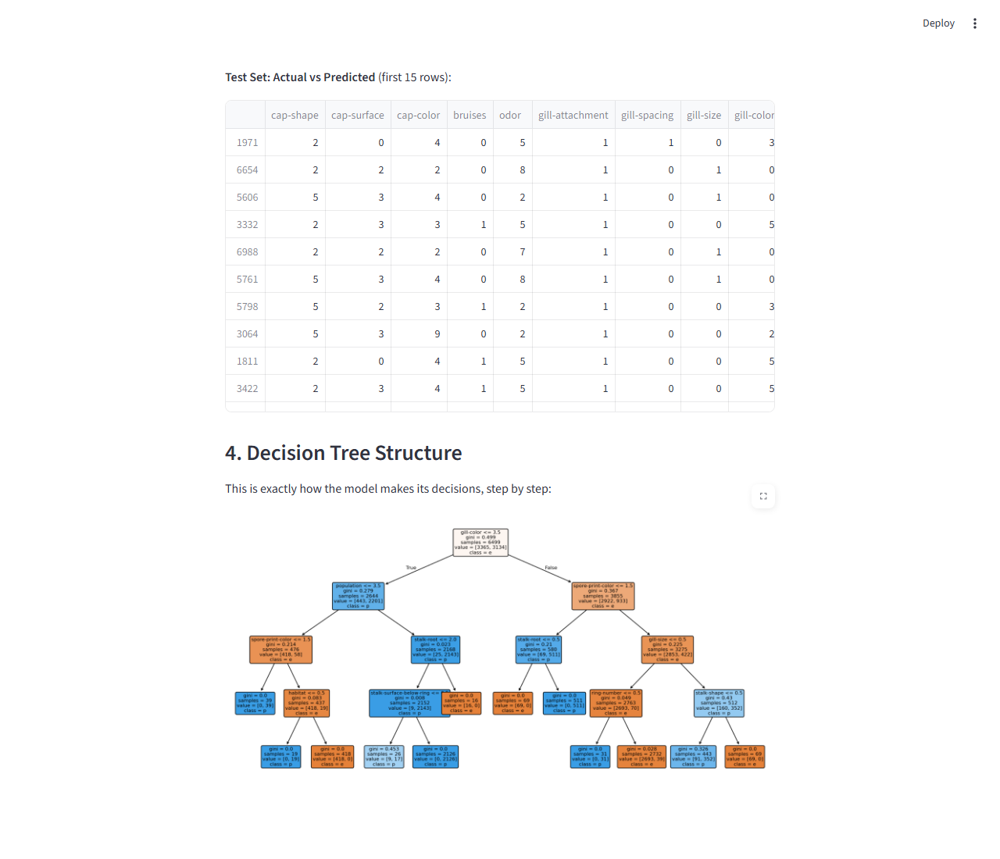

A machine learning classification project that predicts a person's stress level (Low / Medium / High) from their daily lifestyle routine, plus a general-purpose Decision Tree Dataset Analyzer that works on any uploaded CSV dataset.
1. Stress Level Predictor — Users fill a Google Form with their daily routine (sleep hours, study/work hours, screen time, physical activity, pressure score, diet quality). Responses flow into a linked Google Sheet, and a Python backend reads new responses and predicts Low / Medium / High stress using a trained classifier.
2. Dataset Analyzer (Decision Tree) — A Streamlit web app where any CSV dataset can be uploaded. Pick the target column and feature columns, and it trains a Decision Tree Classifier, then reports test accuracy, a classification report, a confusion matrix, an actual-vs-predicted table on the test set, and a full picture of the tree's decision-making structure.



This is a Python/Streamlit project, so the interactive app runs locally (GitHub Pages only hosts this static overview page):
cd code pip install -r requirements.txt streamlit run dataset_analyzer_app.py
Then upload any CSV from code/sample_datasets/ (or your own) and click "Train Decision Tree Model".
| Dataset | Target column | Accuracy |
|---|---|---|
| mushroom_classification.csv | class | 99.9% |
| credit_card_fraud.csv | Class | 99.9% |
| stroke_prediction.csv | stroke | 94.0% |
| airline_passenger_satisfaction.csv | satisfaction | 91.8% |
| bank_marketing.csv | y | 90.5% |
| heart_disease.csv | target | 88.3% |
| adult_census_income.csv | income | 85.4% |
| employee_attrition.csv | Attrition | 82.3% |
| telco_customer_churn.csv | Churn | 79.2% |
| titanic.csv | Survived | 74.8% |
| mental_health_dataset.csv | treatment | 73.7% |